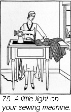
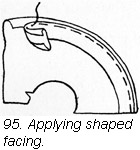
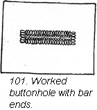
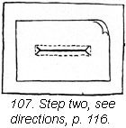
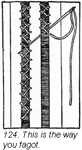
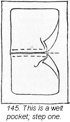
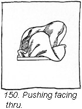

1930—Paris Frocks at Home
Lesson X—A Good Start Deserves a Good Finish
Our Paris clothes when made by our own hands can, and should, have the real French touch that marks the finest custom-made article. The details and finesse shown in the finishing used both on the inside and outside of your dress are what give it the distinction which lifts it out of the amateur class. Under no circumstances must your dress suggest a copy of a cheap ready-made. Finishing, done either by hand or by machine, should never show. Seams should be sleekly flat and unnoticeable and all sewing should have that light, fresh "rehandled" appearance suggestive of the deftness and sureness of touch which comes with care and practice.
Turn a French frock inside out.
The insides of French frocks speak volumes which never can be read in any book. Notice the seams, for instance. A seam is stitched for firmness, pressed open apparently while the dress is being put together, not after it is done, and then the edges finished rather casually with overcasting or picked in tiny points if the material does not fray. Let us stress again the matter of pressing seams as you make the dress. A wealth of French chic is produced by having just the right pressing habits. Use the selvedges of your cloth wherever possible. Good dressmakers often use it on the right side of the garment when it is decorative and as a finish on the wrong side wherever they can.
Observe hems on good dresses. Did you ever see a fine custom-made dress with a hem sewed by machine? Of course not, it just isn't done, that's all!
The etiquette of seam binding.
Inside edges of hems may have a tape or seam binding stitched flat against the edge (do not bind this edge, your hem will show a ridge). This flat tape should then be slip-stitched to the dress by hand.
When you finish a neckline or the bottom of the skirt with a binding, sew the binding on the seam allowance line firmly with machine stitching but do the second sewing of the binding on the wrong side of the garment by hand with close even hemming stitches.
You may have noticed three rows of machine stitching set close together on a narrow hem at the bottom of flared skirts of silk or wool. This is a decorative touch which is permissible if the stitching is accurately spaced and the stitch itself medium or smaller.
Lingerie touches must be dainty.
Lingerie touches on dresses should be of the very finest and should be sewed in as carefully after each washing as though you expected them to be attached indefinitely. Carelessly basted-in neck and cuff frills can give a hit-or-miss, ungroomed look to one's whole costume.
Let us also resort to a French trick to forever end that hitching-up-the-shoulder-strap habit. Sew a tiny little strap inside your dress on the shoulder seam. This little stay you slip under your assortment of shoulder straps and snap against your shoulder seam. The slipping and sliding pink ribbon no longer tumbles down your arm but sets firmly on the top of your shoulder where it was always intended to be.
Construction with the Deltor is as simple as counting.
The Deltor is the expert dressmaker's plan of procedure told in consecutive pictures. It is direct, it is quick, and it is sure. The beginner need do no experimenting with even her first dress.
If you want to get the full value of your Deltor you will, after you have used the layout side, turn it over and follow the illustrations step by step which make the construction easily understood and carry you on without delay from the first basting to the last adjusting of the belt or bow.
If you have never made dresses with the help of a Deltor, read on and follow through the construction directions in this one. Each step in the construction of this frock has been carefully worked out by an expert dressmaker, accurately sketched, and arranged in step-by-step order in vertical columns. See how clearly the pictures show how to crease on the line of small perforations and bring the crease over to the line of large perforations; how to make the plaits in the front of the bodice; how to crease and stitch the tiny tucks of the neckline in the back.
Each Butterick pattern has its own Deltor.
This Deltor was especially made for the Butterick frock pattern which it illustrates. Every Butterick pattern you buy will include a Deltor made especially for that pattern.
You are now working with the actual dress material, using tailor's tacks to guide you instead of perforations in tissue paper. The large perforations have been marked in one color thread and the small perforations with a different color thread. The first illustration shows you how easy it is to put your dress together. You could not possibly turn your plaits in the wrong direction with this picture to look at.
 Time to take steps.
Time to take steps.

Steps one and two, the Deltor says, should be taken before you baste the back and front of your dress together. After fitting, the seams of your dress are to be stitched and pressed open. Two ways of finishing the seams are suggested, one for wash materials, the other for silks and woolens.
You should follow all these suggestions implicitly. Every Deltor includes complete directions for putting the garment together in every suggested fabric.
Dressmaking in the custom made manner.
Step three on this Deltor shows you how to lay the plaits in the flounce and how to put it together.
Your tailor's tacks are there to show you where to fold plaits, and where to make outside stitching. This stitching, you note, is to run down on each plait as far as the second perforation from the top.
The Deltor has, at this point, something to say about finishing your hem. Again two methods are described, as was true of seam finishes, one for woolen materials and another for other fabrics.
If your dress is made of woolen material the Deltor directs you to cover the raw edge of your hem with seam binding. If the material is flat crepe or a similar light-weight fabric, the Deltor suggests that you turn in the raw edge of the hem, stitch close to the turned edge, and clip the joining in the underfold of the plait at the top of the hem. In both cases, whether the dress is of wool or silk, the hem is sewed to the dress with blind hemming done by hand, of course.
The Deltor assures fashion-right length.
The Deltor tells you how deep to make your hem (in this case 4 3/8 inches) to achieve the fashion-right length for your dress. Your own individual height as well as fashion, does, of course, determine to some extent the length you wear your dresses. You should check the finished back length of your new dress which is stated on the back of the pattern envelope with the finished back length of one of your own most becoming dresses. You should then vary the depth of your hem as much as is necessary to insure a becoming length as well as a fashionable one.
Be an expert the first time.
An impossible ideal? Not at all. You have a Deltor as your constant companion... helpful, dependable, and equal to any dressmaking emergency. Seemingly unimportant features like length of skirt or finish of hem may be just the trifling details which keep your dress from looking like Paris. But this need not happen to you, for the Deltor surely prevents you from making the smallest dressmaking error.
It matters not whether you are making a warm wooly coat with a fur collar or a filmy chiffon evening gown, the Deltor made especially for either garment will make the process of construction a pleasure. You have the added assurance that your coat or dress will have the distinction of line and beauty of finish that is characteristic of all good clothes.
You will never experience that unpleasant sensation of wishing to back into corners or walk on the shady side of the street because your costume is less than a perfect creation.
Neck finishes: so simple when done correctly, so tell-tale when done wrong.
Step four of this Deltor shows you how to finish the neck edge, and also the armhole, should you be making the sleeveless view. The description gives you a choice of finishes for both light weight and heavy materials. You are also shown the way to apply both single binding and double binding, information which you, with your passion for perfection in finishings, will be very glad to have.
Perfection in sleeves.
You have now reached the moment when it is time to make and put in your sleeve. Step five on the Deltor tells you just what to do. The illustration shows you the let-out seam which you have marked with tailor's tacks and the little place at the elbow where you will put in gatherings to give the necessary ease.
And now let us call your attention to a little French trick. When using woolen materials clip the seam that holds the sleeve to the armhole at the notches in the sleeve. Then press this seam open across the top curve of the armhole. This gives a smooth flat curve. This kind of pressing is done over a tailor's cushion.
 Dressmaker details for dressmaker touches.
Dressmaker details for dressmaker touches.

Step six of the Deltor shows you what to do to make the smart little bow effects on the front of the blouse and sleeves. These are cut according to Deltor directions using two of the pattern pieces, and carefully finished by hand.
Finishing touches require only a touch.
With the help of your tailor's tacks and the Deltor, placing the bows on this dress is accomplished with a twist of the wrist and a few pins. If your tabs are exactly made and your tailor's tacks correctly placed there is nothing more to do but slip-stitch them onto your dress and tie the ends in a soft, careless knot.
The Deltor stays with you to the end.
Making and attaching your belt is your very last step. Even the details of placing the eyelet for the buckle and the location of the French tacks which hold the belt in place are shown you by your best dressmaking ally—the Butterick Deltor!
When we sew a seam let it be of the finest.
Seams may be made by hand or by machine. At times hand sewing produces the best effect.
An even running stitch is often used for seams on thin material where there is little strain. Running stitches are short. Only two or three threads of the material are taken up on the needle at once before pulling the needle out of the material.
Backstitching is used to make a firmer seam where there may be strain. Take a short stitch back of the end of thread showing on the right side of the seam and carry the needle forward on the under side bringing it up ahead of the end of thread. For each new stitch, put in the needle where the last stitch ended.
There is a half backstitch which makes a seam firmer than a run seam and not so firm as a backstitched seam. Carry the needle only half way back instead of all the way back as in the backstitch. This leaves small spaces between each stitch on the upper side of the seam. The illustration below shows you how.
Paris clothes have smooth seams.
Smooth, unpuckered, straight seams make a garment hang well. When sewing seams, keep both pieces smooth and flat, but be careful not to pull and stretch. Make the stitching even and keep an even tension on your sewing thread whether you are sewing by hand or by machine. Finally, press each seam carefully.
Plain seams.
The simplest seam is the plain seam. Lay two pieces of the garment together, edges matching and sew in a straight line on the wrong side along the seam allowance line. When the material is closely woven and does not fray the edges of this seam may be notched or picked.
Materials which fray should be French seamed except at armholes or on curves where the fitted line might be lost. Bulky materials should never be French seamed. The edges may be cast or bound.
French seams are two faced.
This is the way to make a French seam. Baste the seam on the right side of the garment and sew one quarter of an inch outside of the seam allowance line. Trim off the edge of the seam to a scant 1/8" from your sewing. Now turn the garment wrong side out and crease the seam on your sewing line. Baste a second time on the real seam line and sew. Be sure the raw edges are all enclosed in the second seam.
There is a variation of the French seam called a turned-in seam, or false French seam. Stitch a plain seam on the wrong side of the garment; turn raw edges of the seam in toward each other; and stitch together.
Bound seams must never bind.
Seam edges may sometimes be protected by binding them with bias pieces of cloth. One may use the prepared bias finishing that can be bought at the notion counter in most stores or one may cut her own bias binding from silk or sateen. If you wish to use the binder attachment on your sewing machine to bind the seam edges buy No. 5 flat prepared bias binding and insert it into the binder as directed in your sewing machine instruction book. If you are not using the sewing machine attachment, use bias strips one inch wide and stitch one edge to the seam one quarter of an inch from the edge of the seam. Turn the binding over the edge of the seam; stitch inside of first stitching.
Ribbon binding.
Straight seams may be bound with straight ribbon known as seam binding. Double this ribbon with one side a trifle narrower than the other and press this creased ribbon with a warm iron. Slip the folded binding ribbon over the edge of the seam with the slightly narrower side uppermost. Sew the binding to the seam with hand running or with machine stitching, catching both edges with one row of sewing. This is a dainty finish for silks.
The rolled seam saves time.
In sheer materials, baste as for any ordinary seam. Begin at the right and roll the two raw edges together tightly between the thumb and forefinger of the left hand, rolling toward you. Whip the roll with close stitches under the roll, but not through it. (Ill. 69).
A simple finish for plain seams.
Turn each edge under, away from the seam, and hold the turned edge by hand running or machine stitching.
Stitches to catch unruly edges.
Overhanding—so simple and so indispensable—is used to join two folded edges or two selvedges. Baste the two pieces of material together and sew with close stitches over and over, pointing the needle straight toward you and taking up only a few threads of each fold or from the top of each selvedge. When the seam is opened it will then flatten out without a ridge on the wrong side and no stitches will show on the right side. Look at illustration 71.
Overcasting.
Overcasting is also used to protect raw edges of seams from ravelling. The stitch slants and is taken quite deep in the seam allowance. Trim the edges of the seam even before you start to sew and point the needle toward your left shoulder as you sew. Spaces between stitches are even. A number of stitches may be taken before the thread is drawn up. (Ill. 72).
Two ways to catch-stitch.
Catch-stitching is used to hold down seam edges against the inside of a garment to prevent fraying, and often to hold the edge of a hem to a dress with a very flat effect. It is always used on inside seams in flannel garments and often used at the top of hems in tweed skirts. Where used at the seam, both edges may be pressed in the same direction or they may be opened out and catch-stitched to the garment separately. Illustration 73. The needle is usually pointed toward you as you sew and you work along the line of sewing traveling away from you.
A quicker method of catch-stitching is shown you in illustration 74. This is not as strong as real catch stitching and is done from right to left.
A power plant of your own
Your sewing machine will produce Paris clothes in record time—let it work for you.
Of course, since you are doing dressmaking you have a sewing machine. You would be surprised to know that many people who own this valuable piece of sewing equipment have never learned how much of their sewing can be done on it. You are not one of those queer people we feel sure. Your machine, as you know, can be counted upon to do really remarkable things and save you hours of time and heaps of energy.
Not only do you use your machine constantly for all possible kinds of sewing, but you care a lot about the quality of sewing your machine does. We regret to say that some people will accept from their machines puckered seams or an occasional skipped stitch or loose tension. This seems such a pity when a slight twist of a screw will adjust a sewing machine to the tension or size of stitch suited to whatever material one is working on. Why not have machine stitching beautiful to look at as well as strong?
Your book of directions which comes with whatever make of machine you have is the best possible guide for you to use in familiarizing yourself with every little thing about your household pet. You will want to know where it should be oiled, how to replace the needle, how to wind and insert bobbins, adjust tension screws and last but not least, all the fascinating things that can be made by using those intricate looking bits of shiny steel—the attachments.
You cannot overwork your sewing machine.
Since we have mentioned attachments, just notice how many there are, each designed to do a different thing for you, such as binders, hammers, rufflers, tuckers, braiders, quilters, etc. There is always a little book that comes with your machine which explains just how each is to be used and what you may expect of it. Practice using each one until you feel rather expert. They will help you produce many interesting effects on your clothes which you would despair of ever getting otherwise.
You may want a few additional gadgets to make your sewing still easier such as a small electric light to fasten to the arm of your machine.
In any case, study every word of your instruction book if you have not already done so, and practice up on a few of the adjustments and types of stitching about which you may still feel a little uncertain.
When in doubt, telephone the "company."
There may be a few details which need additional explanation. If so, just call up the office of the sewing machine company which makes your machine. They will always send you an instructor who will explain your machine to you or you may go to the nearest office and see your machine demonstrated and have your difficulties explained away.
Your machine may be old, but do not treat it like a stepchild on that account. Give it the benefit of a good cleaning and oiling. Then check on its parts and adjustments as though it were a new machine.
Faithful service rewards good care.
Whether your machine is old or new, it should have regular, systematic care. It takes very little time and saves you many wasted hours later.
For example, sewing machines that are used continuously require daily oiling and cleaning. If your machine is used only a few hours each day, a weekly oiling and cleaning should be sufficient. You should remove all loose dirt like lint, dust and thread before you begin your oiling job.
A word about bobbins—have plenty of them. They are cheap and it is a great saving of time to have bobbins wound with the different colored threads you frequently use. Be sure you wind your bobbins evenly and not too full.
Regulate the length of stitch on your machine for different types of material. For fine materials it is usually best to use a small stitch and a medium tension with a fine needle.
The vexing matter of skirt lengths.
How long shall I make my skirt? How often have you asked that question, and quite rightly, too , since the lower edge of one's dress has so much to do with a smart appearance! Fashion, of course, has a great deal to say about the length we wear our dresses but becomingness should have just as much influence. Following fashionable skirt lengths to extremes is seldom a good policy for anyone.
There may be some take-up in the length of one's dress during making and so some people like to allow one inch extra length in their planning to allow for this. You should, therefore, when possible mark the skirt length and turn your hem, after the sleeves are in the dress and the finishing is done, unless the Deltor dictates otherwise.
Circular skirts and godets, since they are cut on the bias, will stretch more than straight skirts. The weight of the bias pieces themselves, pulls them down so skirts with these bias features should be hung up in the closet for a day or so and allowed to stretch before the skirt is hung and the hem turned.
After the dress has hung for a while, if there are bias parts in the skirt such as godets, rip the seams that have bias edges and while the garment is still hanging let the bias edges drop as much as they will below the edges they were originally basted to. Let the godet fall naturally and baste the seams again. Then mark the skirt length and turn the hem.
When you hang your skirts without help.
There are various ways of marking skirt lengths. When there is someone to help you, the line is obtained by measuring up the required distance from the floor and placing a row of pins in the skirt. You may wrap a piece of paper around the yardstick the number of inches from the end that you are hanging your skirt from the floor in order to make it easy to see the distance on the yardstick. If your dress has a circular back or front with the rest of the skirt cut on the straight, hang the circular part a little shorter than you hang the rest of the skirt so that if the circular part stretches it will not look longer.
Take the measure of a table.
Suppose you do not have assistance, you must then depend on the inanimate objects in the room to help you out. Sidle up to a table the top of which comes just below your hipline. Stand against the edge of the table and put a row of pins in your dress where the table top touches your skirt, turning slowly and placing pins every two inches. Use nice sharp pins.
 Now take off your dress. Measure from the floor to the table top and
subtract from this measure the distance you want your skirt to be from
the floor.
Lay your dress on the table and with a yardstick measure this distance
down from your line of pins at the hipline and put in a line of pins
at the bottom
of the skirt. For example, suppose the table top is 30 inches from the
floor, and you want your finished skirt length to be 12 inches from
the floor. Subtract
12 inches from 30 inches which is 18 inches and measure 18 inches down
the skirt from your row of pins. The last row of pins gives you your
correct
skirt length. Illustration 77.
Now take off your dress. Measure from the floor to the table top and
subtract from this measure the distance you want your skirt to be from
the floor.
Lay your dress on the table and with a yardstick measure this distance
down from your line of pins at the hipline and put in a line of pins
at the bottom
of the skirt. For example, suppose the table top is 30 inches from the
floor, and you want your finished skirt length to be 12 inches from
the floor. Subtract
12 inches from 30 inches which is 18 inches and measure 18 inches down
the skirt from your row of pins. The last row of pins gives you your
correct
skirt length. Illustration 77.
The yardstick again.
A yardstick will do the same thing for you if no table is convenient. Stand in front of a mirror, and with the stick upright on the floor, one end touching your skirt, place a pin where the top of the stick touches the garment. Now move the stick around your figure putting in pins at two inch intervals. Take the garment off and measure from the pins down to the correct length which you have previously determined by subtracting from the total length of the stick the number of inches you want your skirt to clear the floor.
The gentle art of hemming.
Now that your hemline is marked at a becoming fashion-right length from the floor, the next and most important step is turning it up. There is more that goes into the making of a smooth, non-puckering hem than meets the eye. The first consideration is to trim off the lower edge of your garment perfectly straight and even for the first turning. This first turning should be narrow—at the most not more than half an inch. The depth of the second turning depends on where the hem is used and the effect you want to give. The pattern gives you the correct depth far the design. The next consideration is to see that the second turning is the same depth its entire length. A little marker which you can make yourself is of great assistance in checking this width.
Hems are easy to make the same width all around if you use a little cardboard marker to measure up from the bottom of your skirt. Cut a notch in your piece of cardboard the desired width of your hem.
Baste carefully.
When the hem is wide, you should baste once on the bottom fold of your skirt and again at the top of the hem.
Hems in skirts are usually from two and one half to four inches finished unless some other depth is suggested in the pattern or in the Deltor.
Hems for slightly gored or straight skirts.
The hem is turned up in the usual way described above. When an invisible sewing is desired the turned in edge at the top of the hem is stitched close to the turn but not to the skirt itself. This finished edge is then blind-stitched to the dress.
A straight hem may also be finished with ribbon seam binding on silk and wool materials. When the binding is used do not turn under the top edge of the hem but stitch the other edge of the flat seam binding to the skirt. (Illustration 79.)
Circular hems require special treatment.
In circular skirts or on godets when the material of the dress is soft, the raw edge of the hem may be turned in and a gathering thread put in close to the turning. Draw up this gathering thread until the top of the hem fits the skirt. Blindstitch this drawn up edge to the garment.
If your dress is wool.
Your dress may be made of heavy wool material. If that is the case do not turn in the raw edge before you run in the gathering thread. Draw up the top of the hem to fit the skirt. Then baste flat silk seam binding to the top of the hem, stitch it to the hem and blindstitch the top of the binding to your skirt.
If your skirt is quite full and circular, before sewing the top of the hem to the skirt, slip a piece of muslin cut the shape of the bottom of the skirt inside of the hem; dampen and press on the wrong side shrinking out the fullness. The piece of muslin will prevent the fullness in the hem from making pressing marks on the garment. Move the piece of muslin along in the hem as you press. After this pressing and shrinking has been done, remove the muslin and blindstitch the upper edge of the seam binding to the garment with small stitches, widely spaced. (Ill. 80.)
Where stitches should be inconspicuous.
When sewing hems, train your eye to keep your small stitches an even distance apart. Do not make your stitches too close together or your hem will look too tight and "sewed" on the right side. The thread should be drawn up but not too tightly, since hems should seem to be sewed in rather a casual manner. It is easier to make your stitches inconspicuous if you sew with a fine needle and thread. Baste with silk thread when you sew on silk to avoid marking your fabric.
Pick and choose your hemming stitches.
The slanting hemming stitch is used where stitches must be close together and slanting on the right side. We use it for hems in linen handkerchiefs or babies' dresses of fine cotton materials which are laundered constantly. Begin this stitch without a knot, pushing the little loose end of thread between the hem and the garment. Take a small stitch pointing your needle toward the left shoulder, taking up only a thread or two each time. Fasten off your sewing at the end of the hem with two or three over and over stitches. Examine carefully the detail of this stitch in illustration 81.
Remember, no knots.
If you need to use a new thread before you finish the hem, start it as you did at the beginning and slip the end of the old thread under.
The straight hemming stitch is invisible.
This kind of hemming is used where one wants a tiny stitch on the right side running parallel to the weave of the material instead of slanting across it. It is practically invisible on the right side. The stitches are usually spaced farther apart than slanting hemming stitches. In making this stitch try to keep the needle as nearly parallel to the folded line of the hem as possible instead of pointing it toward the left shoulder. Pick up only two threads of the garment and as little of the hem as possible. The needle enters the hem fold slightly in front of the place where it leaves the garment. (See illustration 82 to the right above.)
Sophisticated hemming.
Slip-stitch and blind hemming are the two kinds of hemming which require a deft touch and nicely defined dressmaking judgment. They are used more often to give that casual Parisian touch to our clothes than the other two kinds of hemming described.
Slip-stitch.
Slip-stitching is used when it is necessary to have Invisible sewing on both the right and wrong sides. The sewing is not strong but it is one of the most valuable stitches for finishing silk and wool garments. When making this stitch take up only one thread of the material on the needle, slip the needle through the under side of the fold and bring it out through the crease. This makes a stitch which is practically invisible. The stitches are spaced about 1/4" apart, and sometimes 3/8".
Blind hemming.
This makes a stitch which is virtually invisible on the right side but shows on the wrong side. It goes faster than slip-stitching and looks just about as well.
Take up only one thread of the garment and use a long slanting stitch through the fold of the hem on the wrong side. This stitch is also used for hems and facings on silk and wool. In both these stitches take care not to draw up your thread too tightly. For detail of the correct blind stitching method examine illustration 84.
True bias is a smooth article.
Bias strips used as facings and bindings both for trimming and finishing edges are constantly being used in all good dressmaking. We seldom complete a dress without cutting some bias finishing pieces. Bias may be bought already cut and sometimes folded also. Bias is more often, however, cut from material from which the dress is made. The way to find a true bias is described on page 46. Having found the true bias line, measure from it the width you expect to cut your bias strips. Mark as many lines all the same distance apart as you can and cut along these lines.
When joining bias strips lay the straight end of the two pieces together with right sides toward each other. You will make a right angle with the strips. Extend the point of one piece beyond the other as far as the width of the joining seam. After these two pieces are stitched this way (Ill. 85), when the seam is opened both bias pieces will be seamed diagonally; the bias edges will form a straight line.
A clever short cut.
There is another very clever way to cut bias pieces from a tube of cloth in one continuous strip. Trim the material from which you expect to cut strips to a straight grain on all four sides. Now find the true bias line. Mark as many strips as can be cut from the whole piece and then cut off the triangular piece at one corner. Pin the two opposite edges of the whole piece together matching the marked lines. (Ill. 86.) Stitch this pinned seam. Begin at the bias end and cut, following the line around and around the tube as in illustration 87.
We are bound to like our necklines.
The most attractive and suitable neckline finish is bias binding, either single or double. If the dress is of wool or heavy cotton use a single binding. Silks, chiffons and light weight cottons may be finished with double bindings since double binding stretches less and is easier to handle. The trick in putting on binding is to keep it from twisting as you sew it on.
Double binding is no trouble.
To make double binding, cut a bias strip four times as wide as the finished binding plus an allowance for a seam on each edge of the binding (usually 1/2" to 5/8" extra). Now fold your long bias strip through the center and press the fold, but be careful not to stretch it on the ironing board. Baste and stitch the two raw edges of the binding to the right side of the edge of the neck that is to be bound. Sew on the seam allowance line and hold the binding toward you. Now roll the binding with a light deft touch to the inside of the dress and sew the creased edge of the binding to the outside of the dress. Do this sewing by hand with a straight hemming stitch. Illustration 88 on page 103 shows a double binding.
Single binding for bulky fabrics.
To make a single binding, cut bias strips twice the finished width plus an allowance for a seam on each edge of the binding. Stitch one edge of the binding to the right side of the dress with the two right sides together on the seam allowance line. The binding will be toward you. Roll the binding to the inside of the dress, turn under the seam allowance and sew to the line of stitching by hand. (Ill. 89.)
Getting on to the curves of curved edges.
Straight edges may be bound with any straight ribbon or braid but curved edges must always be bound with something that will stretch. Some straight looking military braid is woven in such a way that it stretches and shapes around curves very easily. To apply this kind of braid to a curved edge, fold it through the center and press the fold. Slip the curved edge you are binding between the edges of the braid, baste and stitch close to the edge of the braid. One stitching will hold both back and front. Dampening the braid along its edges sometimes makes it easier to shape to the curved edges of your dress. (Ill. 90.)
Bias fold tape to the rescue again.
If you are trimming your curved edges with bias fold tape, there are two ways you may attach it to the dress. The first way is just the same as we have just described for attaching military braid. The second way is to stitch one edge of the bias fold tape to the outside of your dress along the crease in the tape, holding the tape toward you. Then roll the rest of the tape to the inside of the dress and sew the other folded edge to the stitches that hold it to the outside of the dress. This is done by hand. (Examine Ill. 91.)
Let us not hesitate to bind scalloped edges.
One of the most attractive ways of finishing smart scalloped edges is by binding them, although we may face them if we wish. Sheer materials are particularly charming with the added weight of a double texture used along the edge. The most important thing is to keep the scallops symmetrical, the corners sharp and true, and the binding narrow and smooth.
Use care and precision.
Cut strips of tissue paper 2" wider than the deepest part of your scallop and mark on them the outline of your scallop pattern. Baste the scalloped edge of the material to the outline on the tissue. (Ill. 92.)
Baste your binding along this scalloped line basting through the material and the tissue paper. Hold the binding toward you and stretch it at the points. Stitch along this basted line. (Ill. 93.)
Tear the paper away from the stitching, roll the binding to the inside of the garment, and lay any extra fullness at the points into a tiny plait or miter. Baste the turned in edge of the binding and hem it to the line of first sewing. (Ill. 94.)
Face to face with facings.
Facings are indispensable finishes. We rarely make a dress without making use of a facing or two somewhere on it. We sometimes remodel or lengthen a frock by using a facing instead of a hem at the bottom. A hem is to be preferred, however, since the seam which attaches the facing piece to the dress may show through if the material is at all thin or it may show a ridge in heavy fabric.
Facings may be applied in two ways. They may be sewed to the edge of the garment and then turned in toward the wrong side, or applied to the inside of the garment when the edge has been turned inside and pressed down.
A facing cut on the straight-lengthwise or straight-crosswise grain of the material may be used if the edge to be faced follows a straight grain.
If the edge to be faced is bias or slightly curved, bias facing must be used since it can be stretched on its outer edge to fit the larger circle. Press such a facing, shrinking the inner edge, and stretching the outer edge as you press.
Shaped facings are cut the same shape and on the same grain of material as the part to be faced. They are used on edges which are curved or irregular in shape. (Illustration 95.) Facings are usually cut about one inch wide plus two seam allowances. A facing should stay inside the dress easily with the minimum amount of sewing on the inside edge. Sometimes we only tack the inside edge of a facing.
Press ribbon seam binding into service for facing.
 Ribbon seam binding is occasionally used to face an edge. When this is
used turn under the edge to be faced and press it. If the edge is curved
the
seam allowance should be slashed so that the turned portion will lie
flat. Sew the seam binding on the turned seam allowance easing the straight
edge
of the ribbon binding against the garment if the edge happens to be curved.
Tack the free edge of the facing. (Ill. 97.)
Ribbon seam binding is occasionally used to face an edge. When this is
used turn under the edge to be faced and press it. If the edge is curved
the
seam allowance should be slashed so that the turned portion will lie
flat. Sew the seam binding on the turned seam allowance easing the straight
edge
of the ribbon binding against the garment if the edge happens to be curved.
Tack the free edge of the facing. (Ill. 97.)
Finishing slashed openings.
Slashed openings in blouses are often finished with facings. Attach the facing piece to the right side of the garment but do not cut the slash until facing is sewed to the dress.
The line of stitching which holds the facing to the slash must be perfectly straight, so rule a line from the neck to the bottom of the slash. Stitch, tapering the line of sewing from 3/8" at the neck to 1/8" at the point of the slash. Cut through the center almost to the point. Pull facing through to the wrong side and baste along the seam. Turn in the inside edge of the facing and stitch to itself, not to the garment. Tack at shoulder seam and on corners. (Ill. 96.)
Corded facings are easy.
Corded facings are sometimes used to finish neck edges and sleeves. In this case cording is included in the facing which finishes them.
Cut the bias facing piece 1 1/4" to 1 1/2" wide depending on the weight of the cord which it must cover. Sew one end of this piece to the end of a fine cord. Hold the cord nearer one edge of the bias than the other. Fold the bias facing over the cord and sew it into the facing with running stitches. Be sure not to catch the cord. Baste the corded facing flat to the turned in edge of the dress and slipstitch the facing into place. Examine illustration 98.
Be firm with your buttonholes.
Be very careful not to spoil the effect of your beautifully made garment with badly made buttonholes. A little preparation for the buttonhole before it is cut will assist you a great deal in making a good buttonhole later. Mark the place where you intend to make it before you cut; if you plan to make a row of buttonholes, mark the position of the two ends of your row with two lines of bastings. Then divide the space into the desired number of holes and mark where each slit will come with a cross line of basting. Always cut the slit for a buttonhole on a straight thread of the material if possible. The cut should be long enough to let the button slip through easily. Buttonholes become tighter after they are worked.
The right scissors mean a lot.
You should use buttonhole scissors in order to make a clean cut with one stroke. A buttonhole with an uneven or ragged edge is doomed to be a bad one from the start. Buttonholes are almost invariably worked over two thicknesses of material. To prevent either one of the thicknesses of material from slipping, you should baste, or better still, run several rows of machine stitching around the mark for the slit before cutting. This machine stitching is absolutely necessary in loosely woven materials that may ravel since it gives a good firm edge to the finished buttonhole.
The kind of buttonhole depends upon its position.
Buttonholes are sometimes placed vertically as in the center plait of a blouse or shirt, or placed horizontally as in cuffs or on the front of a coat. Where the buttonhole is in an upright position there is no strain on the ends so we make one with a bar finish at both ends. Horizontal buttonholes usually have a button straining against one end. In that case we use a fan on the end where the button rests and a bar at the other end.
To strengthen buttonholes before working them strand each side. Bring the needle up from the wrong side at one end; allow the thread to lie along the edge of the cut on the right side of the garment; make a small stitch on the wrong side at the other end, and carry a strand of thread along the other edge of the cut. This makes a firm foundation.
A special technique for worked buttonholes.
Now you are ready to make your buttonhole with the buttonhole stitch. Begin to work close to the corner which is to be finished with a bar. As you work place the buttonhole over the forefinger of the left hand holding it in position with the thumb and second finger. Insert the needle and while it is pointing toward you, bring the double thread as it hangs from the eye of the needle around under the point of the needle from right to left. Draw the needle through the material and through this loop at the same time drawing up the purl or little knot exactly on the edge of the slit. Continue these buttonhole stitches to the opposite end if you are making a buttonhole with a fan at one end. Be careful to make all the stitches the same depth and close together excepting at the fan end.
The double barred buttonhole.
To make a double barred buttonhole, when you have reached the end opposite your starting point, pass the needle up and down through the material until three threads cross the end of the slit close to the last buttonhole stitch. Turn the work around so that the bar end is toward you and make several buttonhole stitches over the bar and through the material. Now work the other side and the other bar.
For a fan end buttonhole spread your stitches and use an uneven number of stitches around the fan so that the center stitch will be on a straight line with the slit. The other stitches will slant toward the edge of the buttonhole. After the fan is made at the outer end of the buttonhole, work the other side and finish the inner end with a bar.
The professional distinction of bound buttonholes.
Bound buttonholes can be used on garments of almost any kind of material with the exception of very sheer chiffons and fine batistes. They add greatly to the distinctive appearance of a gown when the binding is narrow and they are expertly made. The binding for the buttonholes is usually made of the same material as the garment but occasionally for highly decorative effects, the binding may be made in a contrasting color, and sometimes a contrasting fabric.
There are two ways of binding a buttonhole, but in either case the position and length of the buttonhole should be marked on the garment with basting.
Be careful—both sides show!
When the wrong side is to be exposed, cut the binding piece 5/8" wide on the bias and 1/4" longer than the finished buttonhole. Mark the center of the binding piece and place this mark over the buttonhole mark, right sides together. Stitch 1/8" from each side of the mark and straight across the ends. (See Ill. 104.)
Start stitching on the side rather than a corner. Now turn in the outer edges of the binding piece 1/8", making the turn toward the wrong side of the material and press, as in illustration 105. Cut carefully along the marked line (now covered by the stitched on binding) cutting through both garment and binding. Cut right up to the end stitching but not through it.
Pull the binding through the slit to the wrong side of the garment (illustration 106) and slip-stitch the turned-in edge along the line of stitching. Slip-stitch the ends of the buttonhole to prevent fraying.
Where attention to details produces big results.
The second kind of bound buttonhole is used where the wrong side will not show. Cut a bias binding piece 1 3/4" wide and 3/4" longer than the buttonhole.
Baste and stitch the binding just as you do for the first type of bound buttonhole. Cut the buttonhole along the marking line but do not cut all the way to the end; leave 1/8". Then cut diagonally into the four corners. (Illustration 107.)
Push the binding piece through the slit to the wrong side of the garment, laying the slight fullness at each end in small box plaits. (Illustration 109.) Fasten these plaits with a few overhand stitches. Now sew the binding to position along the stitching line and allow the raw edges to rest against the wrong side of the garment. Press the buttonhole.
Buttonholes for coats.
Where fronts of the garments are finished with facings, as in coats, baste the facing flat against the garment about an inch from the bound buttonhole. Cut a straight line in the facing to correspond with the buttonhole. Turn in the edges of the facing and slipstitch these turned-in edges.
Either one of these methods may be used wherever slashes occur on a garment, such as openings through which belts are drawn or slashes for neckties or decorative appliquéd bows.
Plackets return.
With the suit returned to fashion with its accompanying tuck-in blouse, plackets for skirts and sleeves have again become the order of the day. Openings in skirts and sleeves must rest flat against the figure with no bulging, straining snappers visible.
Plackets may be finished with a continuous straight strip of material or they may require two separate pieces—one used as an extension on the under side of the closing and one used as a facing on the upper side of the closing.
The continuous finish is often called a bound placket and the two piece finish is often called a faced placket. But however you bind them, make them perfect.
Continuous plackets present no problem.
A continuous placket is often used at slashed openings or on seam openings at the bottom of sleeves. Cut a straight strip of material twice the length of the opening and twice the width of the finished underlap (usually 1/4" to 3/8" is wide enough for a finished underlap) plus 3/8" on each long edge of the placket strip for seams. When attaching this placket piece to a slashed opening, be very careful to lay the right side of the lap to the right side of the sleeve and stitch a seam running the seam to a point at the top of the slash. Then turn the free edge of the lap or placket piece toward the inside of the sleeve, turn in the seam allowance and hem to the line of machine stitching. When this kind of placket is attached at a seam, slash the seam allowance of the sleeve where the placket piece is stitched around the top of the opening. It will then be possible to keep the placket flat when it is tucked into the sleeve opening.
The placket closing must lie flat at all times so be sure to sew on enough snaps or buttons to keep the opening from gaping. Snaps should be sewed on behind the edge of the seam so that there will be no danger of their showing.
Now dresses are fitted.
They are not just little two piece over-blouse affairs. Almost everything requires more fitting. Sleeves fit smoothly at the wrists and skirts mold waist and hips. We have waist bands with us again which makes a placket opening necessary in either a suit skirt or one piece dress. You will want to know how to make these placket closings narrow, smooth, and invisible from the right side.
A flat, snug skirt closing.
The  closing in a skirt
closing in a skirt must be deep enough to allow the garment to slip
over the shoulders easily. This opening is usually placed on the left hand
side
seam of the skirt but the design of the skirt regulates, to some extent,
the position and finish of the opening. The closing may be fastened with
hooks and eyes, snaps, or blind loops. The fastening of the belting at
the waist line is usually done with hooks and eyes regardless of what
is used below to close the placket.
must be deep enough to allow the garment to slip
over the shoulders easily. This opening is usually placed on the left hand
side
seam of the skirt but the design of the skirt regulates, to some extent,
the position and finish of the opening. The closing may be fastened with
hooks and eyes, snaps, or blind loops. The fastening of the belting at
the waist line is usually done with hooks and eyes regardless of what
is used below to close the placket.
This is the way to make a faced placket.
The faced placket which is made at a seam using two extra pieces of material is done as follows. Cut a facing piece for the upper side of the closing, of the same material as the garment, if the dress is of silk or light weight wool or cotton material. For a heavy woolen garment cut a facing piece from matching silk. Stitch this facing piece to the seam allowance of the skirt holding the right side of facing against right side of skirt and making the seam a little outside the actual seam allowance line so that the facing will not show as it is folded against the inside of the skirt. This facing piece may also be sewed by hand or machine flat to the turned-under seam allowance, if preferred. The inner edge of the facing may be tacked occasionally to the inside of the skirt.
Make placket strong with machine stitching.
To make the extension on the underlap of the opening, sew a double piece of material an inch and a half wide, finished, to the extended seam allowance of the skirt with a row of machine stitching.
The placket should then be pinned together, the skirt turned wrong side out, the seam allowance of the skirt slashed at the base of the placket, and the extension of the placket stitched to the facing of the placket at its base. The raw edges of these placket pieces may then be overcast together or pinked.
Where there is a fold or plait in the skirt make a placket by cutting through the crease or under fold.
Machine hemstitching: its use and abuse.
Machine hemstitching is a very valuable aid to good dressmaking and was originally brought to us from France to show us dainty and flat ways of finishing linings and fluttering edges in soft materials. It may be used to put together seams, to finish the inside of seams, and to finish free edges in light weight materials. It is occasionally used in decorative shapes and lines, but this use is in bad taste. When in doubt consult the Deltor.
It is done on a special machine carrying two spools of sewing silk at a time and can be done at small expense where plaiting and button covering is done or at the salesrooms of the sewing machine companies.
The line which the hemstitch machine operator must follow should be marked with basting, using the same color thread you expect to have used for the machine hemstitching. Where the hemstitched line is to be made along a straight edge, you need not mark with basting. Tell the operator how far back from the edge of the garment to make her line of hemstitching.
Hemstitch before you seam.
If you expect to have much hemstitching done on the garment try to arrange to have it done before the seams of the dress are all sewed. It is easier to work on pieces of fabric that can be laid out as flat as possible while the stitching is being done.
Hemstitched seams.
Occasionally you may want the seams of a blouse made with hemstitching. This introduces an open work line on shoulders and around armholes. This use of hemstitching is, however, no longer considered in the best possible style. If you should, for any reason, want the seams sewed this way, baste the seams flat, that is with one seam allowance folded back against the garment, and this fold laid on the sewing line of the seam allowance of the other piece.
A very satisfactory use for hemstitching is to stitch the seam together with hemstitching like any plain seam on the wrong side of the garment and trim the seam allowance to the stitching. (Ill. 118.)
Where edges to be machine hemstitched are bias and the material is thin, a foundation under the fabric may be necessary. Mousseline de soie, fine lawn or even tissue paper may be basted under chiffon, lace, or georgette before taking it to the hemstitchers. Be sure your foundation strips are cut on the straight and are at least one half inch wide. If none of these foundation materials are available, stitch the bias line to a piece of firm paper. This will stay the material and mark the line. Tear the paper away before taking the material to the operator.
The mystery of picot edges.
Picot edging is machine hemstitching cut thru the middle of the hemstitching holes. (Ill. 117.) It makes a dainty finish for thin materials on flounces, collars, plaited ruffles, frills, etc. Do not use a picot edge on a collarless neckline. It does not hold its shape well enough and always looks inadequate.
That Paris touch with hand hemstitching.
Hand hemstitching is really decorative when used in fine, well spaced lines and gives an added touch of French preciousness to fine lingerie trimmings.
It is simply a line of open work made by drawing out a succession of parallel threads and then fastening the cross threads in successive small clusters.
Hand hemstitching may be used as a simple line of decoration or it may be used to hold hems or tucks in the garment. It can, of course, only be worked on the straight lengthwise or crosswise threads of the cloth, but these lines can be crossed to make corner or checker-board effects.
Hemstitch this way.
The hemstitching stitch may be done from left to right or from right to left. The first way is probably the more usual since we usually sew hems that way also. When using it to hold a hem, insert the needle in the fold of the hem at the left hand edge. Hold the work over the forefinger of the left hand, keeping the thumb over the thread. Take up four or five threads on the needle and draw it through, holding the sewing thread firmly with the left thumb. At the extreme right of the gathered-up group of cross threads take a short stitch in the fold of the hem as shown in illustration 119, and draw the thread through. Take up the same number of threads in each group and continue to secure these grouped threads to the hem.
Hems may be finished by double hemstitching which simply means that one works a row of hemstitching on both sides of the drawn thread space. The second row of hemstitching has a small stitch between groups sewed through the edge of the single material instead of through the fold of the hem. See illustration 120.
Hand hemstitching has distinction in varieties.
There is a very decorative type of hemstitching called serpentine or fagot hemstitching. It gives a triangular or vine-like effect to the open-work line which is very decorative.
Fagot hemstitching.
Fagot hemstitching is made like double hemstitching except that in the second row half the threads of one cluster and half the threads of the next cluster are combined in one group. This gives a slanting or serpentine effect to the drawn work. See illustration 122. For this type of hemstitching, the groups must contain an even number of threads so that they can be divided evenly when the second row of sewing is made. A symmetrical effect and perfection of detail is the charm of this hand work. Take your time. Needle work will not be hurried. Better none at all than hemstitching carelessly done.
Picoted plaitings for that feminine touch.
Plaited frills cut on the straight of the material are very easily and quickly made with the aid of machine hemstitching and the plaiting machine. To prepare your strips, first baste a line 3/8" from one straight edge of the fabric; make parallel rows of basting 1 5/8" apart. Baste with thread which matches the material to be hemstitched so that the basting need not be removed after the hemstitching is done. Machine hemstitch on every other row of basting. Press and cut through the center of the hemstitching to make the picot edge. Cut also along the basted line which is not hemstitched. This makes a plaiting about 7/8" to 1" wide, finished and attached to the garment. If your material is not too thin, these lines can be marked by drawing out a single thread of the material instead of putting in lines of basting. See illustration 123 on this page.
Make as many strips as you need and join them with a narrow French seam. Have 1/4", or even narrower, plaits put in. Allow three times as much material as you will need since two thirds of it will be taken up in the plaiting.
It is easy to attach.
To attach this plaiting to collars or cuffs baste the frill to the edge of the collar as you would for a plain seam and have the seam picoted. Then turn the frill upright and press the sewing line flat against the collar. (Illustration 121.)
Still another use of the picot finish for fine materials is to turn the picot edge back against the wrong side of the garment. Then stitch this turned edge flat on the right side of the garment and close to the turn. This is often used at the bottom of circular godets and on the sides of panels. It is also used on chiffons, hemmed by hand, instead of by machine.
Fagot-stitch for that open work touch.
The popularity of fagoting as a decorative feature on clothes waxes and wanes. At present we see some of it used with restraint, usually at necklines or for shallow yokes.
Where a fitted shaping is required as in a yoke, a pattern should be cut from stiff paper and the bias folds of the fabrics which are to be faggoted together basted to the paper the proper distance apart, following the shape of the edge line.
The simple fagot-stitch is done by crossing the space between the bias folds of material first from the left to the right taking a small stitch in upper fold and then in the lower fold. The sewing crosses back and forth between the bands, the needle each time passing under the thread of the preceding stitch. This makes a little twist close to the edge of the material. (Illustration 124.) The secret of success with this stitch is to space the stitches evenly in both upper and lower rows and place them close enough together so that the effect is firm and lacy rather than loose and spidery. There are several variations of this simple fagot stitch. The Deltor shows you where to use fagoting.
Double-overcasting for the children's clothes.
Another hand finish which is easily as well as quickly done is double-overcasting. This is often used to finish edges on children's clothes or on smocked blouses. The overcasting is done over a one-eighth of an inch hem. Hold this basted hem loosely in the left hand. Fasten the end of the thread at the right hand end of the work and overcast over the hem working toward the left. When the entire edge is overcast, turn the work and overcast in the opposite direction, inserting the needle at the base of each stitch in the first row of overcasting. This forms a cross on the edge of the hem.
Decorative stitchery is usually simple.
A variation of double-overcasting is called cross double-overcasting and shows the cross between the top and bottom of the hem instead of along the edge fold of the hem. The first row of overcasting is done in the usual way, but in the second row the needle is inserted half way between the stitches of the first row. See illustration 125.
Blanket-stitch is a useful stitch on children's clothes and may be worked in any heavy rope thread. Make the stitch from left to right. Secure the thread without a knot. Hold the end of thread down with the left thumb and take a stitch the depth required pointing the needle straight toward you and bring it out under the edge of the garment and over the held down end of thread. (Illustration 126.)
Cross-stitch, French-knots, braiding, beading, etc., are worked from transfer designs, which will be found in your Butterick Quarterly. Every transfer pattern gives illustrated directions for making stitches suitable for that design.
Feather-stitching and smocking appear on French clothes.
Feather-stitching, when fine and exquisite, is one of the very nicest decorative stitches for small children's garments and fine lingerie. It is often used in rows between tiny hand run tucks on baby dresses and coats. One also sees it used in small circles and scrolls on fine underwear or on a baby's cap.
To keep your line of feather-stitching delicate and even, run a line of colored basting to mark the center line for the sewing. To make a single feather-stitch start with a knot; bring the thread up from the wrong side and hold the sewing thread down over the line with the left thumb. Take a short slanting stitch a little to the left of this line pointing the needle toward the right. Draw the needle out while the thread is still held down by the left thumb. To prepare for the next stitch hold down the thread on the center line and take a stitch of equal length on right side of line; draw the needle out.
For double feather-stitching take two slanting stitches close together on the left of the center line and take two similar stitches on the right of the line. Triple feather-stitching has three small slant-stitches. The beauty of this stitch depends upon its delicacy and evenness. Marks on the illustration indicate position and direction for the stitches.
Smocking is always fashion-right.
Smocking is very decorative. It consists of tightly drawn-up gathers held together by evenly spaced embroidery stitches usually of a color contrasting with the garment. It is much used for children's garments of the better kind both here and abroad. You will find it on tiny dresses, infants' coats, little boys' suits and on the so-called peasant dress worn by juniors. The materials best adapted to smocking are fine batiste, nainsook, lawn, handkerchief linen, cotton crepe and cotton voile. Some of the heavier materials may also be smocked, such as chambray, cotton broadcloth, fine wool serge and crepe de chine. You should always have Butterick transfer patterns to guide you. They not only give the design of the smocking and amount to be gathered-up but also instructions for working the embroidery stitches over the plaits. Transfers recommended for various patterns have all been carefully tested.
It matters how you gather.
Both gathering and shirring may be done by hand or by machine. Your machine attachment direction book will tell you how to do it on your machine. Be sure to consult it frequently.
When gathering by hand make a row of small running stitches just outside the seam allowance line. Stitches and spaces may be the same length or the spaces may be twice the length of the stitches if the stitch is small. Use a knot and start on the wrong side of the garment. Slip the gathering stitch along on your needle as you work and do not take the needle out of the material until you finish a row. This keeps your gathering straight.
If you use only a single row of gathers to hold in the fullness you should place the gathers parallel or "stroke" them before sewing the gathered portion into a seam. To do this remove the needle from the end of the thread, draw up the gathers tightly and fasten them, winding the end of the gathering thread in the form of a figure eight over a vertical pin placed in the material at the end of the gathering line.
"Stroking" makes gathers even.
Now, grasp the work firmly between the thumb and fingers of the left hand with the thumb below the gathering thread. Press each little gather against the thumb with the side of the needle, drawing the needle along the gather above and below the gathering thread. Do not use the point of the needle for this since you may scratch and weaken the material. Place each gather in this way so that the work falls in straight, flat folds. This operation takes a little more time but the enhanced appearance of your gathers makes it worth while. (Ill. 129.)
Double gathering and shirring are related.
When we use two rows of gathering in dressmaking, and we often do, gathers will hang straight and we do not need to stroke them. Where a full skirt is joined to a band or a sleeve is joined to a straight cuff, two rows will keep the gathers in their proper place and make the seam very flat. The second row of gathers is made in a parallel line, 1/4" below the first row. Shirring is made of a number of parallel rows of gathers. To be attractive, it must be evenly spaced, not too far apart (1/4" is ample), and the rows must be absolutely parallel. Mark shirring lines by basting thread while the material is still flat. These basting lines are later to be removed. Shirring is decorative and is considered a trimming. (Ill. 130.)
Gauging or French gathers.
Gauging or French gathers are used when a large quantity of fabric must be drawn up tightly to fit a small space. Like shirting, this is a very decorative addition to your frock. (Ill. 131.)
Make your stitches long on the right side and short on the wrong side of the material. Make each row of gathers with the spaces and the stitches exactly under each other. The rows may be 3/8" apart. The gathering threads are then all drawn up tightly and evenly and fastened at the ends, securely.
Two quick ways to gather.
Fine ruffles for lingerie or children's clothes can be whipped and gathered at the same time. Roll the edge of the ruffle and overhand quite closely as far as it is rolled taking care to take the stitch below the roll but not through it. Draw up the ruffle as you go along to the desired fullness. (Illustration 132.) To gauge the fullness exactly, divide the ruffle in quarters and mark the points with colored thread. Make corresponding marks on the edge to which the ruffle is to be attached. Test the length of your ruffle occasionally as you draw it up. To attach this whipped and gathered ruffle to the garment, roll the edge of the garment and overhand the ruffle to it, taking a stitch in each whipped stitch of the ruffle.
Machine shirring.
Where you have dozens of rows of shirring to make, do it on the sewing machine using the gathering attachment. You will need to baste the first line for the stitching but subsequent lines can be spaced by the use of the gauge on your machine.
More machine shirring.
Still another very easy and satisfactory way of shirring on the machine is to make parallel rows of machine stitching the correct distance apart but stitch with rather a loose upper tension and a medium length stitch. Now pin the center of the stitched piece of material to the table or any flat surface. Hold all the under threads of the stitched lines together with one hand. With the other hand push the material gently up toward the center to form the shirrings. (Illustration 133.)
Fur collars and cuffs in the professional manner.
The Deltor will tell you how to make and attach fur collars and cuffs in the best manner. There are times, however, when you will need to mend fur garments or recut a collar or band of fur to change its shape or to remove worn parts. The following suggestions will help you.
Furs should always be cut with a sharp knife from the wrong side of the skin so as not to cut the hair.
Joinings should be made so that all the hair runs the same way. Cow licks on our fur collars are no more desirable than boyish bobs.
Fur seams should be sewed with a strong cotton thread. No. 30 is about right with an ordinary needle.
Lay fur pieces edge to edge with the fur side down and overhand the edges together. Try not to catch in the hair as you sew. The hair can be pushed through to the right side as you sew and after the seam is made the fur can be brushed gently to make the hair lie smooth and conceal any sign of the seam. (Ill. 134.)
Dampen the seam and stretch the fur.
There will now be a ridge-like seam on the wrong side. This seam must be made to lie flat so dampen the skin around the seam and stretch the fur collar flat on a board, fastening it down with thumb tacks. The fur must remain on the board until it is thoroughly dry but must not be put near the heat to hasten the drying too much. The drying takes twenty-four hours.
If the fur is long haired the skin side must be tacked against the board. Short haired furs like beaver a and seal can be tacked with the fur side down.
Smooth finishes for fur edges.
The edges of fur must be "taped" or finished on the wrong side with braid or seam binding the color of the fur. The edge of the seam binding or twill-cotton tape is overhanded to the edge of the fur collar or band. Turn the tape over the edge of the fur toward the inside of the collar and catch-stitch the tape flat to the pelt. (Illustration 134.) Attach collar by slip-stitching through this tape.
Some old furs or furs that have been poorly dyed have very tender pelts. The taping serves as a splendid reinforcement.
In dyed or in white furs, if the hair is long enough to cover the edges, omit the taping. Sew the edge of the pelt to the garment with a hemming stitch.
Ostrich feathers for your negligee.
Feather trimming is delicate stuff and should be very daintily handled. Mark the line on the garment with basting where the banding is to be attached. There may be a cord at the top. Rip it off. Arrange the upper edge of the trimming along the thread line and overhand it to position using thread the same color as your trimming.
Box plaited trimmings.
Box plaiting may be made from straight or bias strips with hemmed edges and attached with a corded piping. Join piping and unfinished edge of the box plaiting with a plain seam. Turn seam flat under plaits and press plaits flat. Stitch trimming to the edge of garment by machine using the cording presser foot, stitching close to the cord, or sew by hand.
Old fashioned quilling.
Quilling or closely folded narrow side plaitings may be made straight or bias, hemmed, picoted, pinked or cut double. Attach by turning under seam allowance of garment, basting and stitching to quilling close to the folded edge of your garment. (Illustration 137.)
You, too, can make tailored garments.
We often hear women say "I like to make dresses and underwear but I'm afraid to tackle a tailored coat." This is a totally unfounded fear, for if you use a Butterick pattern and follow exactly the directions given by the Deltor for cutting, fitting, making interlinings, pockets and other tailored details, you will get absolutely satisfactory results.
As a matter of fact, tailored garments for women are much simpler than they used to be. Tailored effects at present in fashion are less stiff and boxy. The softer tailored effects are better style. Consequently there is less need for stiff interlinings, canvas reinforcements, velvet collars and notched lapels. Even these things, when in fashion, need not be difficult to make if you will just be careful to follow the directions that expert tailors have prepared.
A lot depends on your shears.
First of all, cut your woolens very carefully. This is always important but in nothing is it more important than in working with heavy woolen coatings. Use good, sharp shears of suitable length, follow the edge line of the pattern exactly and keep your Deltor near.
Consider the shrinkage on rainy days.
Presumably your coat or tailored garment is going to be exposed to damp or rainy weather. Your material therefore must be sponged and shrunk before you cut into it. This must be done to everything you use for the coat, the interlining, the facings, etc. This does not apply to fur or to silk coat linings. Silk linings are always put into a coat loosely so that they seldom draw even if wet.
Test your pattern as for a frock.
Before cutting you should pin your pattern together and test for length, size and position of armhole, and the fit of the neckline across the back. This has been described and suggested before, but we want to impress upon you again how essential it is to test your pattern. Be sure, also, to mark with tailor's tacks all notches and perforations on every piece of your tailored garment. On dark material you can sometimes use French chalk but tailor's tacks are safer.
Good tailors pay attention to grain.
Watch carefully for grain of material as you work. Most woolens have napped surfaces and the grain may not show up easily but let us remind you that even though the grain may not show at first glance the hang of the garment will be thrown completely out if any piece is cut "off grain." Review our chapter on grain of material to refresh yourself on how to measure and fold to find the straight grain.
Just baste everything.
Now, a word about your basting. It's something like this; when in doubt, baste; baste in every possible place, and don't feel that by doing all this basting you are a rank amateur. You should see the condition of a partly made coat or suit in any good custom tailoring establishment. The pieces are lined and double lined with bastings, crossing and double crossing all over the garment. You see, basting is absolutely essential to hold parts against each other as you handle them. There must be no slipping or curling of edges during stitching or pressing. Your Deltor will faithfully tell you where bastings should be made.
Time and care now, saves care and worry later.
What of pinning in tailoring garments? Pin everything before you baste, putting pins in at right angles to seams and three or four inches apart. Hold seam edges toward you and pin from the bottom of a seam upward, holding your bias edges lightly. Pin and baste with the weight of your garment on a table.
Stitch cautiously.
Try out your machine stitch on a double piece of your coat material, and adjust the size of the stitch and the upper tension until you have the handsomest stitch possible. Use heavy sewing silk both on the bobbin and for the upper thread and a fairly coarse needle.
Press often.
Good tailors keep an iron and pressing board at their side constantly turning from the cutting table or the machine to press some tiny place only two or three inches long. This is the way to obtain the coveted tailored effect on seams and edges. The final pressing should never be the first.
Special tailoring for special places.
Directions for pressing various kinds of materials are given you in detail in Chapter XII. Read them before you make your tailored coat. In addition, you will need some special suggestions. For instance, if you are working with a stretchy material with a tendency to sag, the edges must be reinforced on the inside with a narrow linen tape, 3/8" wide or with the selvedge of a lining material like unbleached muslin, which must be thoroughly shrunken before you sew it to your coating.
Many coat sleeves are finished without a cuff, particularly suit coat sleeves. Baste a bias strip of interlining to the bottom of the sleeve just above the turn of the hem. The cloth hem should then be turned over the reinforcement piece and catch-stitched to it. This sewing will, of course, be covered when the lining is put in.
Shrinking coat sleeves to fit.
The thing to do with extra ease or fullness which is allowed at the top of a coat sleeve is to adjust the sleeve at the top to fit and then shrink out the extra fullness. To do this, slip the top of the sleeve over the small end of a tailor's cushion. In woolens lay a damp cloth over the gathers and press lightly, patting with iron. Use a dry cloth and a warm iron for silks.
Lead weights are permissible.
Often flat lead weights are needed to make a garment hang down properly. Cover the weights with lining material before they are attached inside the hem of the coat so that they will not wear through.
A game for two.
Dressmaking is a real game—not a game of chance. There are rules as in any other game. The rules for making your coat are all in the Butterick Deltor. You can certainly follow simple Deltor directions and if you have a strong enough desire to own an individual well-made coat at an incredible saving of cash you can most certainly make it for yourself.
Pockets test a tailor.
Wherever the design of a Butterick pattern calls for a pocket, the Deltor tells you which kind to make and how. But we are going to let you in on some of the tailor's secrets we use in the Deltor.
Little boys like in-and-out laps.
A manly looking tailored pocket for a boy's coat or a very tailored top coat has an in-and-out lap.
For making any kind of pocket, you must mark the pocket opening with a line of basting which shows plainly on both sides of the garment. Then stitch the lap to its lining with right sides together; turn lap right side out, baste around all its edges. Finished edges may be stitched or left soft as you prefer.
Leave edges raw along the top. Press the flap.
Baste a pocket section inside, placing the top half an inch above the line of basting. (Ill. 140.)
Cut a facing two inches wide, long enough to extend one inch beyond each end of the basting line. Lay this facing on the right side of the garment with upper edge just touching the line. Baste and stitch 1/8" below the edge. (Ill. 141.)
Lay flap right side down against garment, finished edge upward and raw edges 1/8"' below the line of stitching holding facing. Stitch flap 1/8" above top of facing. (Ill. 141.)
Cut a slash between the stitchings being careful not to cut through the lap.
Press the facing seam open. Push the facing through the slash to the wrong side of the garment. Let facing form a binding 1/i4" wide at the pocket opening on the right side. (Ill. 142.)
Baste and stitch along the line where the binding joins the garment. Turn the lap down over the opening and baste close to the seam.
Step four: in-and-out lap pocket.
Now finish attaching the facing by turning to the wrong side of the garment. Turn in lower edge of facing and stitch it only to the attached pocket piece. Push the lap through the opening from the right side, keeping the raw edges upward and baste to the garment just below the pocket opening.
Now prepare the inner pocket section by facing it with a piece of the garment material. Cut this facing about three inches wide.
The inner pocket section is now placed over the outer section and they are basted together along the upper edges. Blind-stitch the top of the inner pocket section to the inside of the garment and stitch through all thicknesses above seam where lap joins garment. Turn the garment wrong side out and stitch the pocket sections together all the way around. Overcast the raw edges of the pocket sections. All these processes may be observed in illustration 143.
Finish the ends of the pocket with worked bars on the right side. Pull out basting holding the pocket lap and pull the lap through the opening to the right side of the garment. The pocket is done. (Ill. 144.)
Welt pockets made the easy way.
A welt pocket looks well in medium weight material. You should have enough material to make both pieces of the pocket and the welt of the garment fabric.
The first step is the same.
Mark the pocket opening for a welt pocket just as you do for a lap pocket.
Lay both pocket sections face down on the right side of the garment. The raw edges should exactly touch the basting line which marks the pocket opening. Now, machine stitch each piece 3/8" from the edge. This will leave 3/4" between the two rows of stitching. Tie the ends of the stitching threads carefully to prevent your mistaking them for bastings later on and pulling them out. Examine illustration 145, which shows the pocket pieces being applied.
Cut the pocket slash along the marking line to within 3/16" from each end. Now cut diagonally into the four corners almost to the stitching line, forming a—< at each end. Turn this little triangle into the pocket opening, tacking it in place.
The lower pocket section should be marked with a line of tailor's tacks to indicate the top edge of the welt.
Now draw two pocket sections through to wrong side creasing lower section on line of tailor's tacks.
It's all over but the pressing.
The seam at the lower edge of the opening should be carefully pressed down against the garment and the seam at the upper edge of the opening pressed up against the garment, on the inside, of course.
Now, blind-stitch the lower pocket piece against the seam to form the welt. Turn in the ends of the welt evenly and blind-stitch to position on the outside of the garment.
Next turn to the inside of your garment and stitch the pocket sections together, overcasting all edges. Press the whole pocket thoroughly, giving special attention to the welt. It is this final pressing that makes or breaks your pocket.
A trim tailored pocket from one piece of cloth.
The one piece pocket is really just a large bound buttonhole with the pocket pieces just an extension of the binding. The bound pocket looks very well in light weight silk or woolen material and in firm but medium weight cottons, such as Indian Head or linens. Before you set your heart on bound pockets, take stock of your remnants. You must have enough of the dress material to make the entire pocket.
Mark pocket opening as usual with a line of basting.
Find the center, end to end, of your big pocket piece. Lay this center line over the basted marking line in your garment with the right sides together. Baste to position along the center line. Stitch 1/8" from each side of the basting line and straight across the two ends. (Ill. 149.)
Slash along the basting line as you did for the welt pocket, cutting diagonally into the corners almost to the stitching, and forming a—< at each end. Press the seams open. Draw the pocket piece through the slash to the wrong side, forming a 1/8" binding on the right side. Examine illustration 150.
Finish on the right side with machine stitching.
The pocket binding forms a tiny inverted box plait at each end of the pocket on the wrong side. Hold in place with a few stitches and catch the two bound edges of the pocket opening with crosswise stitches to keep pocket in shape. Make a row of machine stitching on the right side in the seam line where binding is sewed to the pocket opening. (Ill. 151.)
Now turn to the inside of the garment and fold the upper pocket section down against the lower pocket section. Baste and stitch the two sections together. Trim off any unevenness at the bottom of the pocket and overcast the raw edges. Press the pocket on both sides of the garment. If possible, steam before removing cross stitching on the right side.
Suit your pocket to your fabric.
Bound pockets are particularly suited to fine materials without surface nap. Welt pockets are suited to both smooth finish materials and those with some nap. They have a less formal and precise look than bound pockets, consequently we often see them used in small boys' jackets, women's sport clothes and in dresses made of light weight tweed and covert cloth. If you use a welt pocket, you must be sure that the material used for the welt matches the material of the garment against which it rests, both as to grain and woven or printed design.